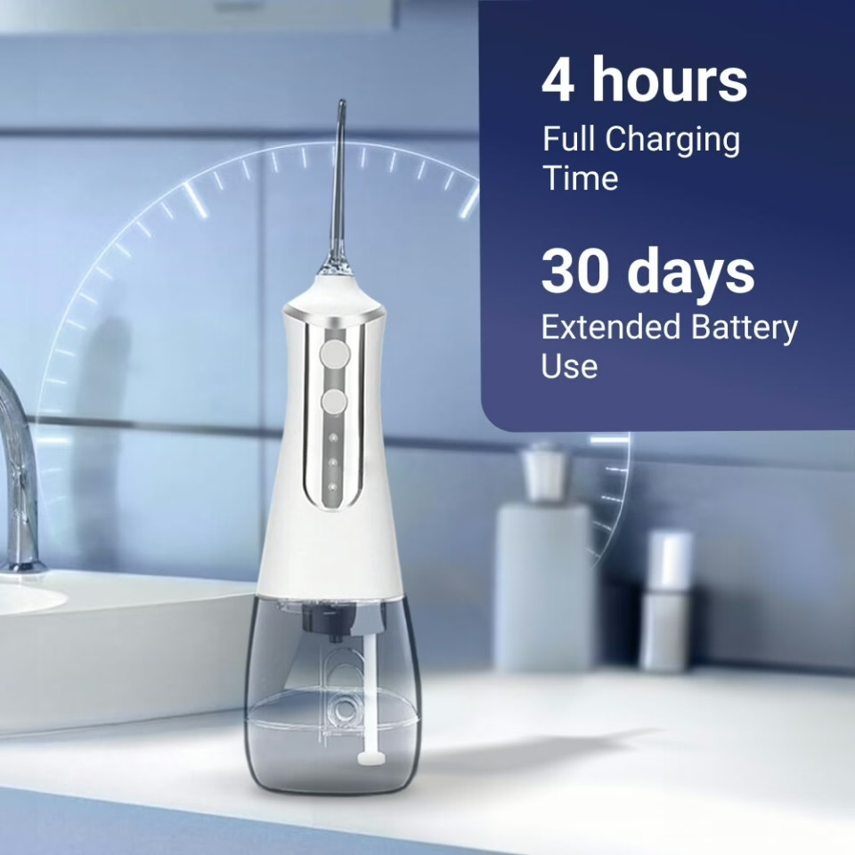

WellaWhite Hydropulseur dentaire

Nettoyez entre les dents et le long des gencives grâce à un jet d’eau précis, trois modes de nettoyage et des embouts interchangeables pour une routine quotidienne plus simple.
- ✓ Technologie avancée de jet d’eau pour un nettoyage ciblé
- ✓ 3 modes de nettoyage, dont un réglage doux
- ✓ Embouts interchangeables pour cibler différentes zones
- ✓ Modèle rechargeable et portable avec batterie longue durée

Un nettoyage ciblé par jet d’eau pour l’hygiène dentaire quotidienne
L’hydropulseur dentaire WellaWhite est un appareil rechargeable qui dirige un jet d’eau ciblé entre les dents et le long des gencives. Ce jet aide à éliminer la plaque et les résidus alimentaires dans les zones parfois difficiles à atteindre avec le fil dentaire.
Trois modes de nettoyage permettent d’adapter chaque séance au confort et aux besoins de nettoyage. Un réglage doux convient aux dents et gencives sensibles, tandis que les modes plus puissants offrent davantage de pression pour les résidus tenaces.
Les embouts interchangeables permettent de diriger le jet vers des zones précises de la bouche. Le jet ciblé peut passer autour des bagues, fils et brackets, ce qui facilite aussi le nettoyage autour des appareils orthodontiques.
Le grand réservoir d’eau favorise une séance continue et la batterie rechargeable est pensée pour le quotidien. Une charge complète est annoncée pour environ 30 à 40 jours d’utilisation, ce qui rend WellaWhite pratique à la maison comme en voyage.
WellaWhite intègre l’hydropulseur dans une routine simple à domicile : remplir le réservoir d’eau propre, choisir un mode puis guider l’embout entre les dents et le long des gencives. Une utilisation régulière favorise des dents propres, une haleine fraîche et des gencives bien entretenues.

Disponibilité de WellaWhite
Consultez l’offre WellaWhite actuelle et la disponibilité d’achat pour la France.

Choisissez la pression d’eau adaptée à votre routine
WellaWhite associe une technologie avancée de jet d’eau à trois modes de nettoyage. Clean Mode est destiné au nettoyage quotidien de la plaque, Soft Mode offre un jet plus doux pour les gencives sensibles et Pulse Mode utilise des pulsations d’eau pour un nettoyage ciblé.
Les réglages permettent d’adapter l’hydropulseur aux différentes zones de la bouche sans changer de technique. Commencez avec un niveau confortable, suivez la ligne gingivale et marquez une courte pause entre les dents pour laisser le jet évacuer les résidus.
Cette approche contrôlée transforme le nettoyage interdentaire en une étape rapide et répétable, adaptée aux zones sensibles, à l’entretien quotidien ou à un nettoyage plus ciblé.
Nettoyage précis autour des dents, des gencives et des appareils
Le jet concentré est conçu pour atteindre les espaces étroits entre les dents et le long des gencives, là où la plaque et les résidus peuvent s’accumuler. Il nettoie sans le mouvement de va-et-vient du fil dentaire et se contrôle facilement autour des zones sensibles.
Pour les appareils dentaires, le jet peut être dirigé autour des fils, brackets, bridges et implants. Les embouts interchangeables facilitent le ciblage tandis que les modes réglables permettent de passer d’un nettoyage doux à un jet plus vigoureux.
Vous obtenez ainsi une routine précise : dirigez le jet, suivez la ligne gingivale et insistez sur les zones qui demandent habituellement davantage de temps.


Une batterie longue durée pour garder une routine régulière
WellaWhite utilise une batterie rechargeable conçue pour limiter les recharges fréquentes. Les informations produit indiquent environ quatre heures pour une charge complète et environ 30 à 40 jours d’utilisation par charge.
Cette autonomie rend l’hydropulseur pratique au quotidien et en déplacement, sans dépendre d’une prise à chaque séance. Son format portable permet de conserver la même routine d’hygiène dentaire à la maison comme en voyage.
Le grand réservoir est conçu pour permettre une séance continue afin que le remplissage, le choix du mode et le nettoyage restent simples du début à la fin.
Adoptez votre routine en trois étapes simples
Commencez par remplir le réservoir avec de l’eau propre. Un réservoir suffisamment rempli permet au jet de fonctionner sans interruption pendant le nettoyage des espaces interdentaires et de la ligne gingivale.
Sélectionnez ensuite le mode correspondant à votre confort et à vos besoins. Soft Mode est l’option la plus douce pour les zones sensibles, tandis que les autres réglages offrent une action plus puissante ou pulsée.
Penchez-vous au-dessus du lavabo, dirigez l’embout entre les dents et le long des gencives, puis avancez méthodiquement dans la bouche. Le jet ciblé évacue progressivement plaque et résidus.
1. Remplissez le réservoir
Ajoutez de l’eau propre pour une séance de nettoyage continue.
2. Choisissez un mode
Sélectionnez le réglage adapté à votre confort et à vos besoins.
3. Suivez la ligne gingivale
Guidez l’embout entre les dents et le long des gencives.


Une bouche plus propre, une haleine fraîche et des gencives soignées
Le nettoyage par jet d’eau aide à retirer plaque et résidus alimentaires dans les zones étroites souvent oubliées lors d’une routine rapide. Diriger le jet entre les dents et le long des gencives contribue à garder ces espaces propres et à maintenir une sensation de fraîcheur.
Le mode doux offre aux gencives sensibles une option plus délicate tout en conservant le même nettoyage ciblé. Avec une utilisation régulière, WellaWhite complète naturellement le brossage dans une routine quotidienne.
Pour un sourire propre et visiblement plus lumineux, le bénéfice pratique commence par une bonne hygiène dentaire : éliminer les résidus, maintenir une haleine fraîche et garder la ligne gingivale propre.
Gardez l’hydropulseur propre et prêt pour la prochaine séance
Après chaque utilisation, videz l’eau restante et rincez le réservoir à l’eau tiède. Un nettoyage périodique avec un détergent doux aide à garder le réservoir propre pour un usage régulier.
Les embouts sont interchangeables et doivent rester propres entre les séances. Les recommandations fournies indiquent de remplacer les embouts tous les 3 à 6 mois pour conserver une utilisation hygiénique et un jet efficace.
WellaWhite est conçu autour d’un cycle quotidien simple : remplir, choisir un mode, nettoyer puis rincer l’appareil. Cette routine directe facilite une hygiène dentaire régulière sans utiliser un fil jetable à chaque séance.

Questions fréquentes sur l’hydropulseur WellaWhite
Réponses sur le jet d’eau, les gencives sensibles, les appareils dentaires, la batterie, la fréquence d’utilisation et l’entretien.
Comment fonctionne l’hydropulseur WellaWhite ?
WellaWhite utilise une technologie de jet d’eau ciblé pour retirer plaque et résidus entre les dents et le long des gencives. Remplissez le réservoir, choisissez un mode et guidez l’embout autour des dents et des gencives.
WellaWhite convient-il aux gencives sensibles ou aux appareils dentaires ?
Oui. WellaWhite propose des modes réglables, dont un réglage doux pour les gencives sensibles. Le jet ciblé peut être utilisé autour des bagues, bridges, implants et autres appareils dentaires.
À quelle fréquence utiliser l’hydropulseur ?
Les recommandations fournies indiquent une utilisation une à deux fois par jour dans le cadre d’une routine d’hygiène bucco-dentaire régulière. Une utilisation constante favorise des dents propres, une haleine fraîche et des gencives bien entretenues.
Combien de temps dure la batterie après une charge complète ?
La batterie rechargeable est annoncée pour environ 30 à 40 jours d’utilisation après une charge complète, ce qui la rend pratique au quotidien et en voyage.
Comment nettoyer et entretenir WellaWhite ?
Videz et rincez le réservoir après chaque utilisation. Nettoyez-le périodiquement avec un détergent doux, gardez les embouts propres et remplacez-les tous les 3 à 6 mois selon les recommandations.
Disponibilité de WellaWhite
Consultez l’offre WellaWhite actuelle et la disponibilité d’achat pour la France.